Marius, 22 ans
Il crée sa savonnerie dans le hangar au fond de son jardin, à Salon-de-Provence : deux chaudrons et quelques mises.
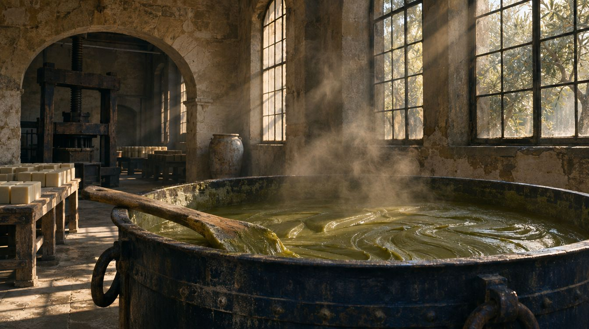
Salon-de-Provence · Quatre générations · Entreprise du Patrimoine Vivant
Le chiffre de la maison
Le savon de Marseille Marius Fabre est cuit au chaudron selon le procédé marseillais, avec des huiles végétales sourcées en France et en Europe, sans huile de palme depuis 2020. Une recette de quatre générations, que le Japon nous réclame depuis 1990.
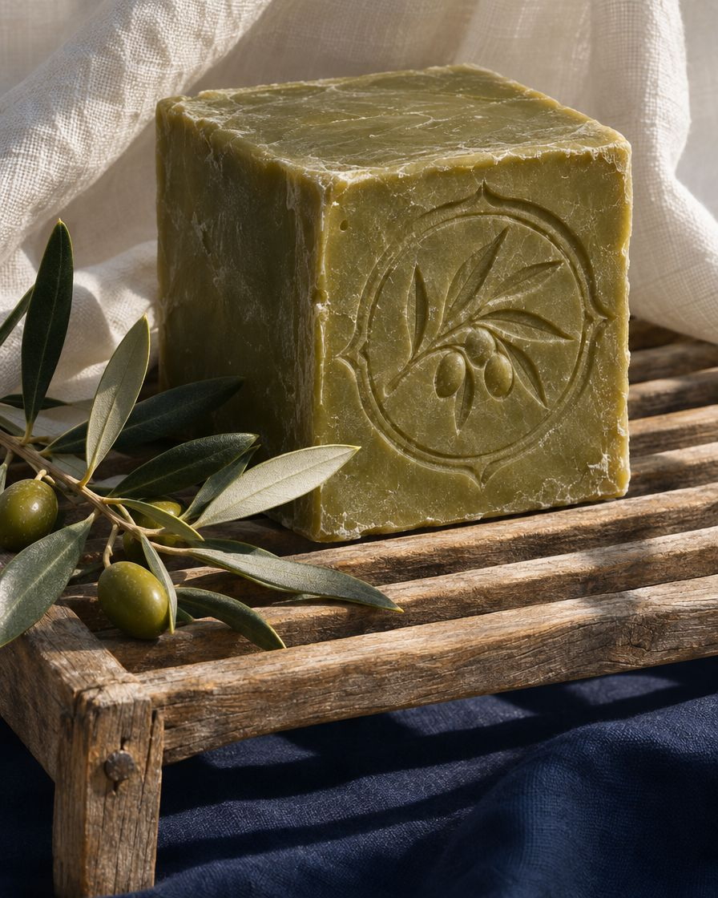
Noël 2026
Des coffrets illustrés par Anna, la plus jeune des sœurs Fabre, prêts à offrir.
Commandez avant le 18 décembre, livré pour Noël. Emballage offert.
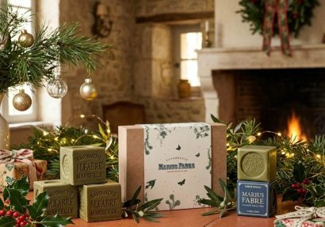
Le geste
Rien n’a changé dans l’atelier de l’avenue Paul-Bourret : le savon y est encore cuit, coulé, découpé et frappé comme au temps de Marius.
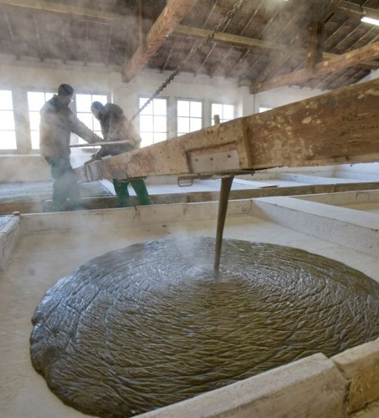
Les huiles végétales cuisent plusieurs jours dans les chaudrons, sous l’œil du maître savonnier.
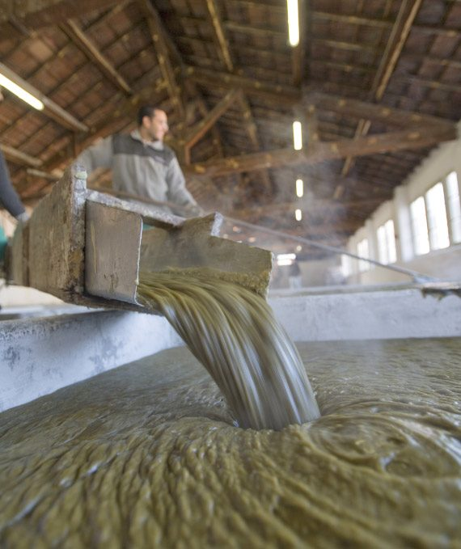
La pâte est coulée dans les mises, ces grands bassins où elle sèche avant d’être tranchée.
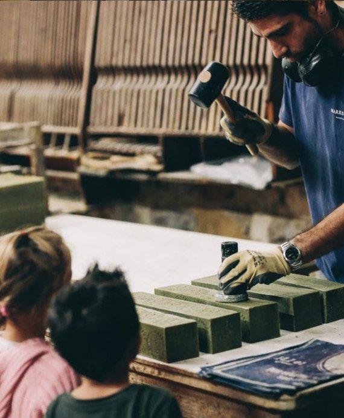
Les plaques sont découpées en barres, puis en cubes, et sèchent à l’air libre.
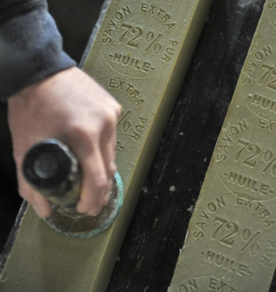
Chaque cube est frappé à la main du sceau de la maison : la signature du vrai savon de Marseille.
Le film
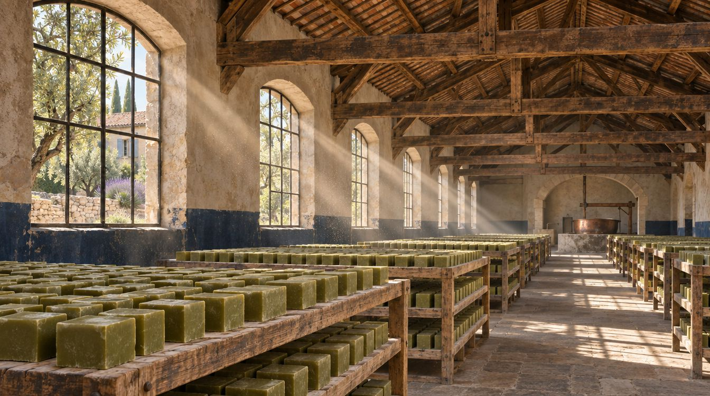
Il crée sa savonnerie dans le hangar au fond de son jardin, à Salon-de-Provence : deux chaudrons et quelques mises.
Marius mobilisé, son épouse dirige la fabrication et la vente pendant quatre ans.
La savonnerie s’installe dans l’ancienne fabrique Couderc. Soixante-dix ouvriers y travaillent.
Le fils aîné succède à son père à la veille de la guerre.
Le dernier fils de Marius reprend les rênes, après avoir grandi au milieu des mises.
Les premiers importateurs japonais, toujours fidèles plus de trente ans après.
Pour son centenaire, la savonnerie ouvre le premier musée du savon de Marseille de la région.
Les arrière-petites-filles de Marius poursuivent l’aventure.
Quatrième boutique, après l’usine, le centre de Salon et le Marais à Paris.
Une édition anniversaire, et la même recette, toujours cuite au chaudron.
Visite gratuite
Les ateliers et le musée du savon de Marseille sont ouverts gratuitement, au cœur de l’usine de 1927. Réservez votre créneau en quelques secondes.
Nos boutiques
Et plus de 40 pays, du Japon au Royaume-Uni.
La boutique
Avec ce produit
La maison
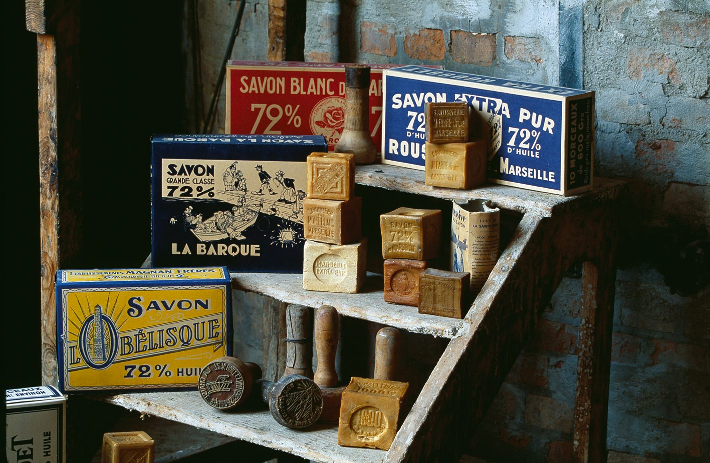
Musée du savon de Marseille
Ouvert en 2000 dans une ancienne salle de séchage, il retrace l’histoire du savon en Provence depuis le Moyen Âge : moules, presses, étiquettes, et la mémoire de quatre générations de savonniers.
Réserver une visiteSalon-de-Provence
En 1900, une quinzaine de savonneries animent la ville. Marius Fabre est aujourd’hui l’une des toutes dernières à fabriquer encore le savon de Marseille selon le procédé traditionnel, dans ses propres chaudrons.
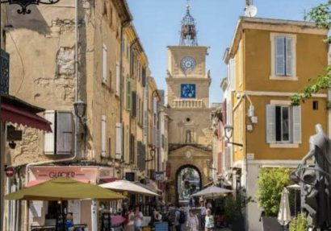
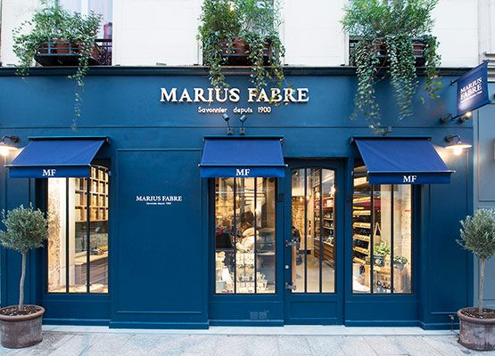
Les boutiques
Quatre boutiques prolongent l’univers de la savonnerie : la boutique d’usine, le centre de Salon, Paris et Arles. Partout, le même savon, et la même façade bleue.